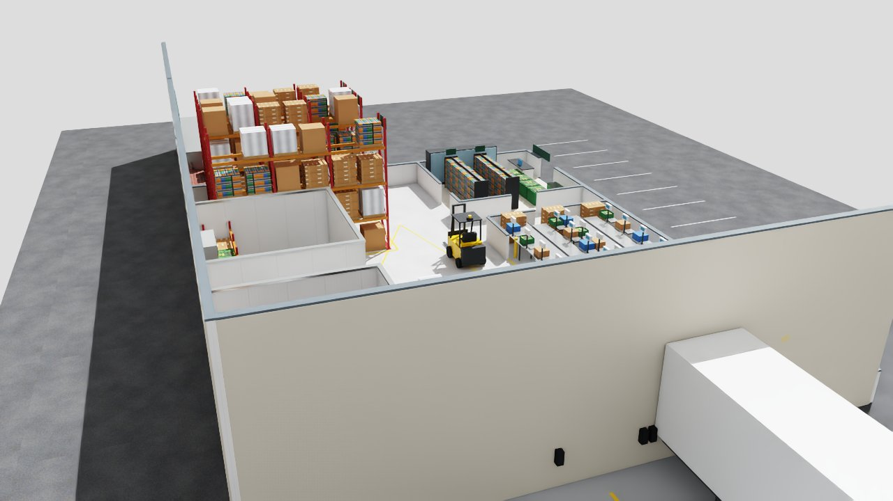
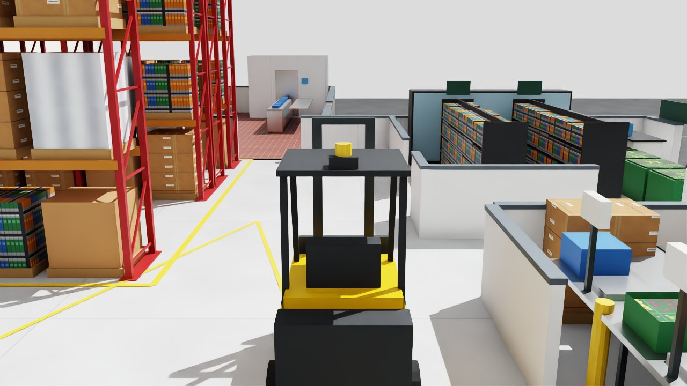
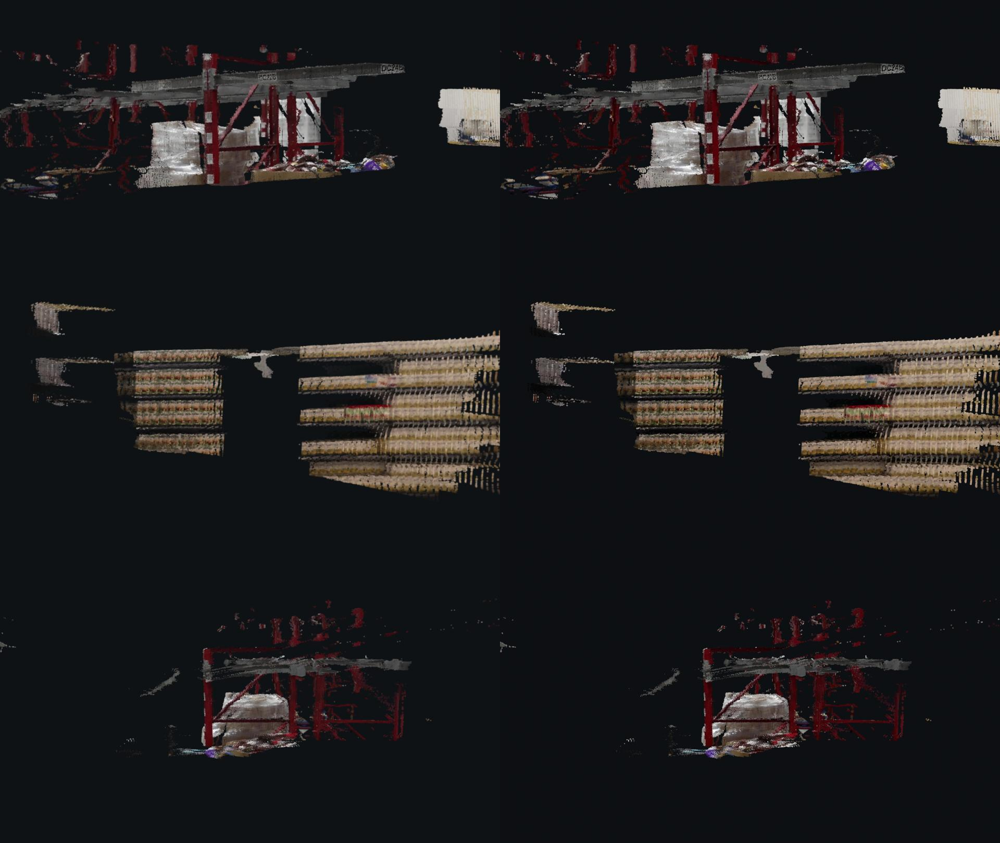
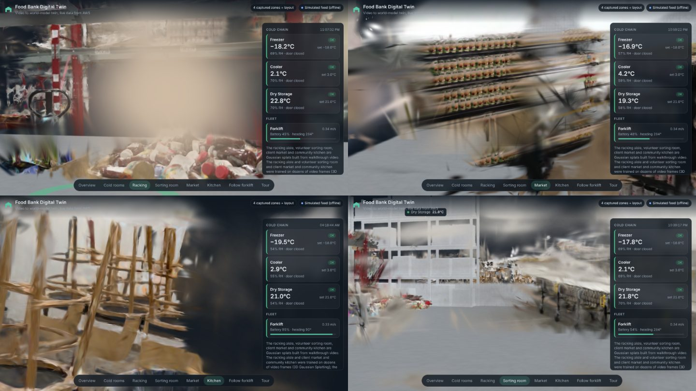

Visualize: browser, Omniverse, Blender
Step 3: the same OpenUSD scene and the same JSON feed drive every renderer.
Browser (live)
The demo runs on any laptop or phone with no install: three.js shows the Blender facility, badges are pinned to telemetry positions, the forklift follows its live path, and Spark renders the splat captures (?captures, or photoreal.html to compare zones from their source cameras). It is published from public/ by GitHub Actions and reads the AWS API through the repository variable TWIN_API_URL. URL options: ?view=cold|aisle|sorting|market|kitchen, ?tour=1, ?sim=1. Reference: docs/VIEWER.md.
NVIDIA Omniverse on an AWS GPU Rendered
NVIDIA documents native rendering of USD particle fields in Omniverse RTX, but in our trial Kit 107.3 (Isaac Sim 5.1) drew the twin's Gaussian-splat prims as blank grey, so only the meshed Blender facility was rendered. The trial ran Omniverse Kit headless from NVIDIA's Isaac Sim container on one EC2 GPU instance in us-east-2 (g6.xlarge with an NVIDIA L4; g5.xlarge with an A10G when g6 had no capacity), rendered scripted cameras, uploaded the frames and terminated itself. The forklift in the clips follows a scripted path, not live telemetry. A new AWS account starts with 0 GPU vCPU quota; 4 vCPUs were granted on 2026-10-25. For regular use the same image runs as an ECS service or AWS Batch job on a GPU Auto Scaling group with a minimum of zero, so an instance exists only while someone is rendering. A Kit extension that polls /telemetry and /operations would set attributes on the USD prims by id; that extension is designed, not built.


Facility rendered; splats not yet. Seven runs on real AWS GPU instances in us-east-2 (g6.xlarge, and g5.xlarge for run 7) on 2026-10-25 took about 94 instance-minutes, about $1.34 at list price, and each instance terminated afterwards. Isaac Sim 5.1 crashed on the Deep Learning AMI's driver 595, started on plain Ubuntu with driver 580, and on runs 6 and 7 rendered the facility in RTX, including clips of the forklift driving (96 frames at 1280×720 in 17 to 49 s once warm). The Gaussian-splat captures loaded but rendered blank grey, so Omniverse rendering of splats is not shown. What failed, what fixed it and a working recipe: Omniverse learnings and pitfalls.
Blender
Blender 5.2 opens the facility directly, and scripts/blender_render_twin.py brings the splat captures in as point clouds (Blender's USD importer does not read ParticleField3DGaussianSplat yet). scripts/render_usd_splats.py renders true Gaussian splats from the USD on a plain CPU. Both read the same camera list, so stills line up shot for shot.


Reference: docs/RENDERING.md.